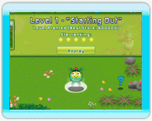

9 |
Poder Estrella |
 |
|

El Poder Estrella de Follie es un indicador de la confianza a si misma. Follie esta muy preocupada con el estilo de su entorno lo cual la afecta y daña su confianza.
Cuando un nivel es completado, el florecido Flowerworks tiene un efecto permanente en su entorno, dándole a este un mágico aspecto. Cada vez que esto ocurre, la confianza de Follie aumenta y se siente más segura para completar su aventura. Cada nivel completado le concede a Follie una nueva Calificación de Estrellas. Entre más puntaje logres más alta será tu calificación. Cada nivel tiene una máxima Calificación de 5 estrellas. Cada nueva estrella ganada cuenta para la Calificación de Estrellas de Follie. Esto se ve en la parte de arriba de la pantalla cuando está explorando el mundo. Cuando Follie gana nuevas habilidades, podrás lograr puntajes más altos y una mejor Calificación de Estrellas. Repite un nivel las veces que desees, y continúa intentando lograr Calificación de 5 estrellas. |
 |
 |
 |